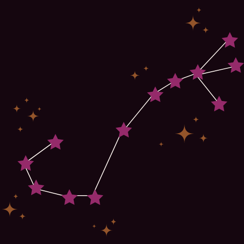
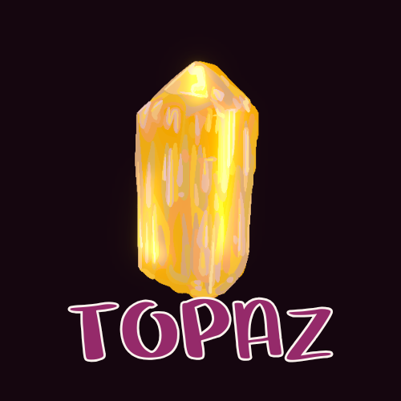

<<<<<<< HEAD
SCORPIO
-ELEMENT • MODALITY • Ruled by PLANET =======SCORPIO
Water • Fixed • Ruled by Pluto and Mars >>>>>>> 4cd979d (modify and add via visual studio code editor)
InfocardGlyph: uElement: ☆ I Modality: MODALITY ☆ f Ruling Planet: PLANET ☆ V Symbol: The Archer Constellation:  House: HOUSE ☆ 2 Colors: COLORS Crystal:  Flower:  =======
=======
|
InfocardGlyph:sElement:WaterModality:FixedRuling Planet:Pluto and MarsSymbol:The ScorpionConstellation:House:8thColors:Black and BurgundyCrystal:Flower:
>>>>>>> 4cd979d (modify and add via visual studio code editor)
<<<<<<< HEAD
|
Taurus Rising Weekly Horoscope
Loading today’s horoscope…
Weekly Journal Prompt
placeholder
Sign Overview
placeholder.
Key Characteristicsplaceholder placeholder Health and Wellness
placeholder
Famous PeopleHistorical: placeholder Modern: placeholder Fictional: placeholder Explore Other SignsSign Overview
Scorpio is intense, perceptive, and emotionally fearless, drawn to what lies beneath the surface. Ruled by Pluto (and Mars), they are agents of transformation, thriving through depth, truth, and rebirth.
Strengths
Weaknesses
Career & Education PathsCareers: Psychology, research, investigation, finance, healing arts, crisis management Education: Deep-focus study, independent research, transformative learning environments Health & Wellness
Emotional processing and release are crucial. Avoid suppression.
Famous FiguresHistorical: Marie Curie Modern: Drake Fictional: Raven (Teen Titans) Explore Other Signs |